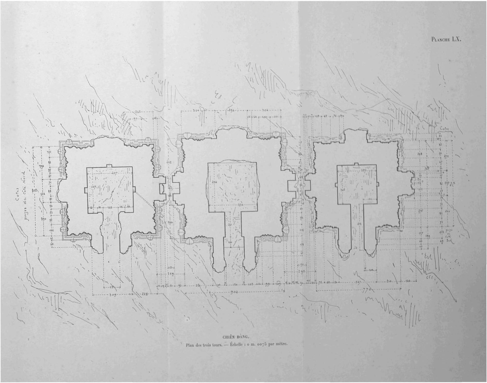
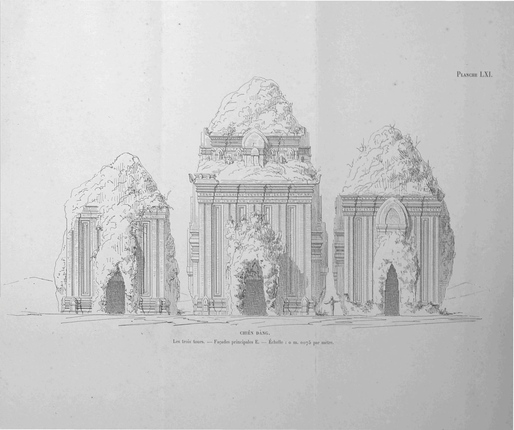

Bản đồ Chiên Đàn
Xã Tây Hồ, thành phố Đà Nẵng · Ba tháp gạch và nhà trưng bày điêu khắc tại di tích
Hai bản vẽ của Henri Parmentier
Chiên Đàn trong Inventaire descriptif des monuments čams de l’Annam, tập I, Album de planches, 1909. Tỷ lệ in gốc khoảng 1:133⅓. Bấm vào ảnh để xem chi tiết và đọc các kích thước trên bản vẽ.


Thấy rõ lòng tháp, cửa thật, các phần nhô của cửa giả và khoảng cách giữa ba khối tháp. Xem bản rõ ↗


Thấy rõ tháp Giữa nổi trội, các trụ áp tường, diềm và phần cửa còn lại tại thời điểm khảo sát. Xem bản rõ ↗
Tư liệu khảo sát lịch sử. Tờ LX bố trí cạnh Đông ở phía dưới. Biểu ghi album tại EFEO ↗
Ảnh: Lê Trí Công
Trong khu di tích
- Tháp Bắc
- Tháp Giữa
- Tháp Nam
Ba tháp xếp theo trục bắc–nam, cửa chính cùng mở về phía đông.
Nhà trưng bày tại chỗ
Nằm cạnh ba tháp, trưng bày nhiều phù điêu, tượng nữ thần, vũ nữ, chiến sĩ và linh vật bằng đá. Phòng trưng bày thuộc cùng khu tham quan.
Điểm trên bản đồ là tọa độ KMZ đại diện cho quần thể. Tọa độ riêng của phòng trưng bày và lối vào đang chờ xác nhận.